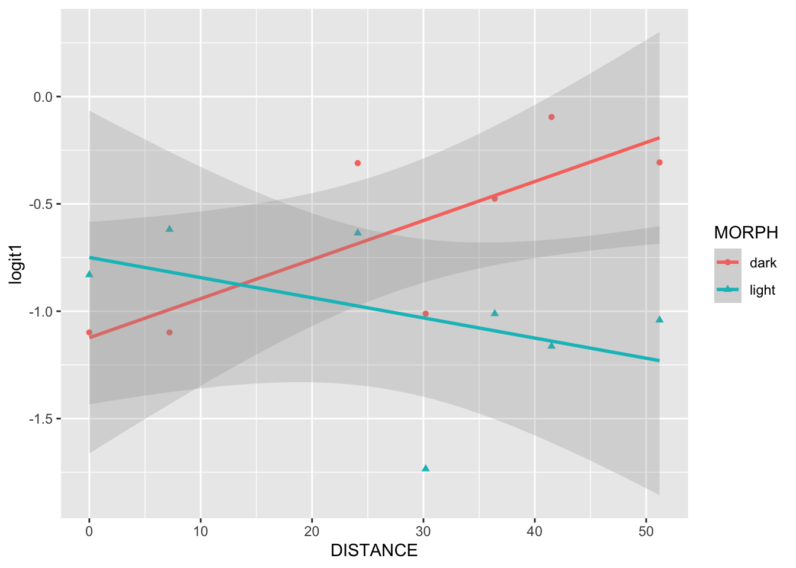
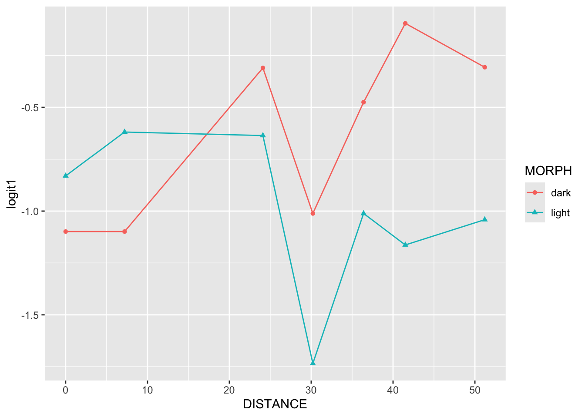
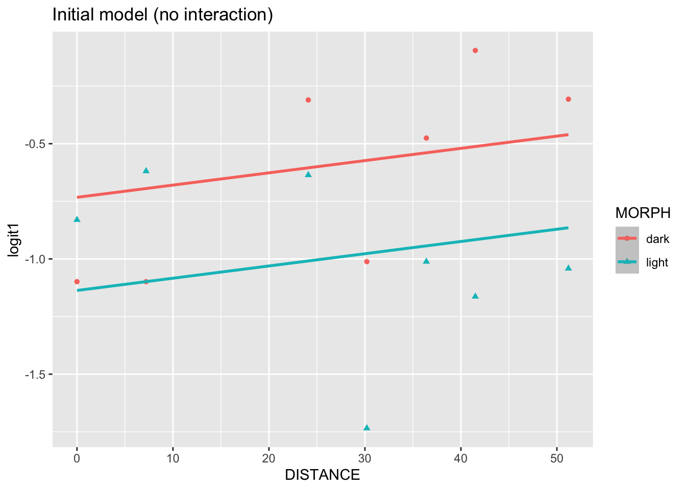

The following objects are masked from 'package:stats':
filter, lag
The following objects are masked from 'package:base':
intersect, setdiff, setequal, union
library(readr)library(ggplot2)library(gridExtra)
Attaching package: 'gridExtra'
The following object is masked from 'package:dplyr':
combine
moth <-read_csv("data/moth.csv")
Rows: 14 Columns: 4
── Column specification ────────────────────────────────────────────────────────
Delimiter: ","
chr (1): MORPH
dbl (3): DISTANCE, PLACED, REMOVED
ℹ Use `spec()` to retrieve the full column specification for this data.
ℹ Specify the column types or set `show_col_types = FALSE` to quiet this message.
ggplot(data = moth, aes(x = MORPH, y = logit1)) +geom_boxplot()
# Plot empirical logits vs. distance separately by morphggplot(data = moth, aes(x = DISTANCE, y = logit1, color = MORPH, shape = MORPH)) +geom_point() +geom_smooth(method="lm", alpha =1/4)
`geom_smooth()` using formula = 'y ~ x'

# Repeat above plot but "Connect the dots" within morphggplot(data = moth, aes(x = DISTANCE, y = logit1, color = MORPH, shape = MORPH)) +geom_point() +geom_line()

Code Exercises 3-5
# Initial modelbreg2 <-glm(prop1 ~ DISTANCE + dark, weights = PLACED, family = binomial, data = moth)summary(breg2)
Call:
glm(formula = prop1 ~ DISTANCE + dark, family = binomial, data = moth,
weights = PLACED)
Coefficients:
Estimate Std. Error z value Pr(>|z|)
(Intercept) -1.136742 0.156758 -7.252 4.12e-13 ***
DISTANCE 0.005314 0.004002 1.328 0.18422
dark 0.404052 0.139377 2.899 0.00374 **
---
Signif. codes: 0 '***' 0.001 '**' 0.01 '*' 0.05 '.' 0.1 ' ' 1
(Dispersion parameter for binomial family taken to be 1)
Null deviance: 35.385 on 13 degrees of freedom
Residual deviance: 25.161 on 11 degrees of freedom
AIC: 93.836
Number of Fisher Scoring iterations: 4
exp(coef(breg2))
(Intercept) DISTANCE dark
0.3208626 1.0053278 1.4978822
# Alternative way to express initial modelbreg2a <-glm(cbind(REMOVED, notremoved) ~ DISTANCE + dark, family = binomial, data=moth)summary(breg2a)
Call:
glm(formula = cbind(REMOVED, notremoved) ~ DISTANCE + dark, family = binomial,
data = moth)
Coefficients:
Estimate Std. Error z value Pr(>|z|)
(Intercept) -1.136742 0.156758 -7.252 4.12e-13 ***
DISTANCE 0.005314 0.004002 1.328 0.18422
dark 0.404052 0.139377 2.899 0.00374 **
---
Signif. codes: 0 '***' 0.001 '**' 0.01 '*' 0.05 '.' 0.1 ' ' 1
(Dispersion parameter for binomial family taken to be 1)
Null deviance: 35.385 on 13 degrees of freedom
Residual deviance: 25.161 on 11 degrees of freedom
AIC: 93.836
Number of Fisher Scoring iterations: 4
# Yet one more way to express initial modelbreg2b <-glm(prop1 ~ DISTANCE + MORPH, weights = PLACED, family = binomial, data = moth)summary(breg2b)
Call:
glm(formula = prop1 ~ DISTANCE + MORPH, family = binomial, data = moth,
weights = PLACED)
Coefficients:
Estimate Std. Error z value Pr(>|z|)
(Intercept) -0.732690 0.151221 -4.845 1.27e-06 ***
DISTANCE 0.005314 0.004002 1.328 0.18422
MORPHlight -0.404052 0.139377 -2.899 0.00374 **
---
Signif. codes: 0 '***' 0.001 '**' 0.01 '*' 0.05 '.' 0.1 ' ' 1
(Dispersion parameter for binomial family taken to be 1)
Null deviance: 35.385 on 13 degrees of freedom
Residual deviance: 25.161 on 11 degrees of freedom
AIC: 93.836
Number of Fisher Scoring iterations: 4
Code Exercises 6-9
# Plot initial model (no interaction)moth <-mutate(moth, breg2.pred =predict(breg2, type="link") )ggplot(data = moth, aes(x = DISTANCE, color = MORPH, shape = MORPH)) +geom_point(aes(y = logit1)) +geom_smooth(aes(y = breg2.pred), method="lm") +ggtitle("Initial model (no interaction)")
`geom_smooth()` using formula = 'y ~ x'

# Model with interaction (full model)breg3 <-glm(prop1 ~ DISTANCE + dark + DISTANCE:dark, weights = PLACED, family = binomial, data = moth)summary(breg3)
Call:
glm(formula = prop1 ~ DISTANCE + dark + DISTANCE:dark, family = binomial,
data = moth, weights = PLACED)
Coefficients:
Estimate Std. Error z value Pr(>|z|)
(Intercept) -0.717729 0.190205 -3.773 0.000161 ***
DISTANCE -0.009287 0.005788 -1.604 0.108629
dark -0.411257 0.274490 -1.498 0.134066
DISTANCE:dark 0.027789 0.008085 3.437 0.000588 ***
---
Signif. codes: 0 '***' 0.001 '**' 0.01 '*' 0.05 '.' 0.1 ' ' 1
(Dispersion parameter for binomial family taken to be 1)
Null deviance: 35.385 on 13 degrees of freedom
Residual deviance: 13.230 on 10 degrees of freedom
AIC: 83.904
Number of Fisher Scoring iterations: 4
# Interpret exponentiated coefficients and associated profile CIsexp(coef(breg3))
(Intercept) DISTANCE dark DISTANCE:dark
0.4878587 0.9907562 0.6628165 1.0281788